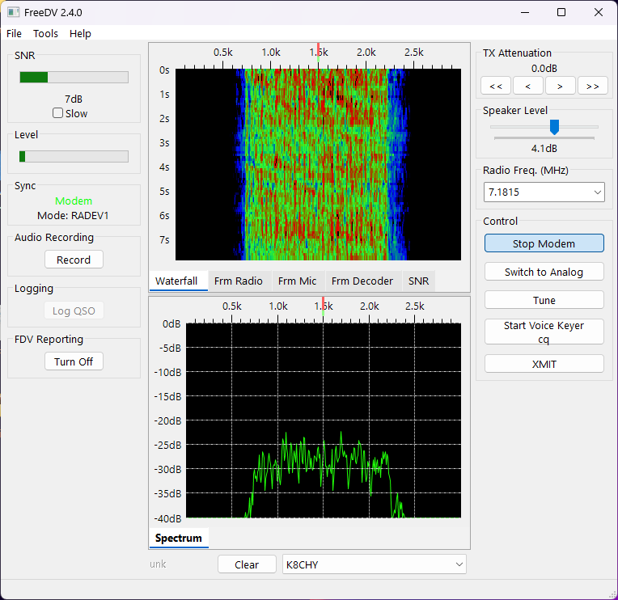

FreeDV auf Kurzwelle: mein IC-7300 MK2 spricht digital
FreeDV habe ich am IC-7300 MK2 bereits ausprobiert. Hier findest du den Weg von der Windows-App zum ersten Empfang und zu sauberem Sendeaudio – plus RADE-Decoding im UberSDR.

Screenshot: FreeDV-Webseite (freedv.org) · FreeDV 2.4.0 / RADEV1.
Sprache digital übertragen – weiterhin über Kurzwelle
Bei FreeDV spricht man in ein Mikrofon, doch auf dem Band liegt ein digitales Modemsignal. Die Software verarbeitet die Sprache; ein SSB-Transceiver überträgt das daraus entstehende Audiosignal. Am anderen Ende macht FreeDV wieder verständliche Sprache daraus. Beide Stationen müssen denselben kompatiblen Modus verwenden.
Das Projekt ist offen entwickelt. Besonders spannend ist RADE: Es verbindet moderne Sprachverarbeitung mit Funktechnik. RADEV1 benötigt ungefähr 1,5 kHz HF-Bandbreite, obwohl die rekonstruierte Sprache einen grösseren Audiobereich abdeckt. Das ist kein Versprechen, jedes schwache Signal verständlich zu machen – Funkweg, Störungen und saubere Aussteuerung bleiben entscheidend.
Mein Einstieg: IC-7300 MK2, Windows und Headset
FreeDV habe ich mit meinem IC-7300 MK2 bereits selbst genutzt. Die folgende Anleitung beschreibt eine nachvollziehbare Einrichtung. Die Reglerwerte müssen zur eigenen Audiokette passen; ein pauschaler USB-Pegel ist kein Ersatz für die Aussteuerungskontrolle.
- IC-7300 MK2 und ein USB-Datenkabel zum Windows-PC.
- Aktueller MK2-USB-Treiber von der Icom-Produktseite.
- FreeDV-GUI von freedv.org und ein PC-/USB-Headset. Das Headset überträgt deine Stimme; die USB-Audioverbindung zum Funkgerät transportiert das Modemsignal.
1 · Funkgerät für USB-Audio vorbereiten
Vor Änderungen das bisherige Setup notieren oder sichern. Die folgenden Menüpunkte beziehen sich auf den MK2; Anleitungen für den ursprünglichen IC-7300 passen nicht in jedem Detail.
| Menü / Einstellung | Startpunkt |
|---|---|
| SET → Connectors → MOD Input → DATA MOD | USB: Modem-Audio vom Computer |
| Connectors → USB AF/IF Output → Output Select | AF: demoduliertes Empfangsaudio |
| USB AF/IF Output → AF SQL | OFF (Open): Audio nicht durch die Rauschsperre abschneiden |
| USB AF/IF Output → AF Beep/Speech… Output | OFF: keine Bedien- und Sprachausgabetöne im Decoder |
| Betriebsart | SSB mit DATA: z. B. LSB-D auf 40/80 m, USB-D auf 20 m, passend zur Gegenstation |
„USB“ bei DATA MOD meint den Computeranschluss. „USB“ als Betriebsart meint das obere Seitenband. Diese zwei Bedeutungen sind leicht zu verwechseln. Für den Einstieg ein normales SSB-Filter verwenden und PBT mittig lassen. NR, Noise Blanker, Notch und Sprachkompressor zunächst ausschalten, damit das Modemsignal möglichst unverändert durchläuft.
2 · Vier Audio-Wege richtig zuordnen
Öffne in FreeDV Tools → Easy Setup. Wähle das Audio-Gerät des Icom sowie Mikrofon und Kopfhörer des Headsets. Die genaue Windows-Bezeichnung hängt vom Treiber ab. Bei unklarer Zuordnung hilft die erweiterte Audiokonfiguration:
Windows-Systemtöne gehören auf den PC-Lautsprecher, nicht auf das Funkgerät. Audioeffekte und automatische „Verbesserungen“ auf dem Modemweg ausschalten. Im Fenster „Frm Radio“ muss Empfangsaudio ankommen; „Frm Mic“ zeigt deine Sprache. Ein bewegter Mikrofonpegel beweist noch nicht, dass der Sender das richtige Signal erhält.
3 · CAT und PTT verbinden
In Easy Setup die Hamlib-Steuerung wählen und das passende Geräteprofil einstellen. Beim MK2 ist der virtuelle Serial Port A (CI-V) der direkte Ausgangspunkt. Seine COM-Nummer im Windows-Gerätemanager nachsehen. Ein anderes Programm darf denselben Port nicht gleichzeitig exklusiv belegen.
Mit vorhandenem MK2-Profil die CI-V-Adresse B6h passend zum Gerät verwenden. Der ursprüngliche IC-7300 verwendet 94h. Die Adresse nicht vorsorglich ändern: Ein älteres Profil ist nur ein gezielter Kompatibilitätsweg. Bei Problemen zuerst Profil, COM-Port und Adresse vergleichen; danach gegebenenfalls „CI-V USB (A) Echo Back“ passend zur Software einstellen. Beim MK2 betrifft „CI-V Baud Rate“ im Funkgerät die REMOTE-Buchse – alte USB-Baudraten-/Unlink-Anleitungen deshalb nicht blind übernehmen.
Für diese Einrichtung PTT über CAT nutzen; RTS/DTR und USB SEND nicht zusätzlich auf Verdacht aktivieren. Der Test-Knopf kann den Sender einschalten. Zuerst bei kleiner Leistung an geeigneter Last beziehungsweise auf einer freien, für den Betrieb zulässigen Frequenz prüfen.
4 · Erst empfangen, dann sauber senden
- Mit einer Gegenstation einen gemeinsamen Modus vereinbaren, zum Einstieg etwa RADEV1. Den FreeDV Reporter zur Suche nach Aktivität nutzen.
- Frequenz und Seitenband passend einstellen, Modem starten und Synchronisation beobachten. Reporter-Einträge ersetzen nicht das tatsächliche Hören am eigenen Standort.
- RX-Pegel ohne Übersteuerung einstellen. Für TX mit kleinem Pegel beginnen und nur so weit erhöhen, dass ALC höchstens leicht anspricht. Ein breit aufgerissener ALC-Balken ist kein Qualitätsmerkmal.
- Kurzen Durchgang mit normaler Mikrofonlautstärke machen und eine konkrete Audio-Rückmeldung erfragen. Digitale Sprache kann den Sender länger belasten als ein kurzer SSB-Sprachpeak; Temperatur und mittlere Leistung beachten.
- Funktionierende Einstellungen dokumentieren. Beim Wechsel zurück zu analogem SSB Audioquelle und DATA-Modus bewusst kontrollieren.
Das Bild lesen
Die Aufnahme oben zeigt FreeDV 2.4.0 mit RADEV1. Wasserfall und Spektrum zeigen das empfangene Signal; die Sync-Anzeige hilft zu erkennen, ob das Modem synchronisiert ist. Die angezeigte Frequenz von 7,1815 MHz und der SNR-Wert gehören zu dieser Aufnahme und sind keine allgemeine Einstellempfehlung. Ältere FreeDV-Modi wie 700D, 700E oder 1600 sind nicht einfach andere Namen für RADEV1.
FreeDV auch im UberSDR hören
UberSDR bietet einen FreeDV-RADE-Decoder. So lässt sich digitale Sprache an einem entfernten Empfangsstandort im Browser ausprobieren:
- UberSDR Luzern oder Perfugas öffnen und ein passendes Signal in USB oder LSB abstimmen.
- Die Erweiterung FreeDV Decoder öffnen und Start wählen. Das normale SDR-Audio wird während des Decodierens stummgeschaltet; die dekodierte Sprache kommt im Browser an.
- Signalstatus und Frames beobachten. Mit Stop den Decoder wieder beenden.
- Activity zeigt Reporter-Aktivität zum Band. Nicht jede gelistete Station muss am gewählten SDR hörbar sein.
Der geprüfte UberSDR-Decoder ist auf RADE ausgelegt. Daraus folgt keine Unterstützung sämtlicher älterer FreeDV-Modi. Praktisch interessant ist der Vergleich mit der eigenen Station: Kommt das Signal in Luzern oder Sardinien klarer an? So lassen sich Standort und lokales QRM von der Softwareeinrichtung unterscheiden.
Wenn es noch nicht spricht
- Kein Pegel: From Radio, AF-Ausgabe und Windows-Aufnahmegerät kontrollieren.
- Signal sichtbar, kein Sync: Modus, Seitenband, Abstimmung und Filter prüfen.
- PTT geht, keine HF: DATA MOD und To Radio prüfen; Mikrofon- und Modemweg nicht verwechseln.
- Verzerrtes Sendeaudio: Pegel reduzieren, Kompressor abschalten und Gegenprobe machen.